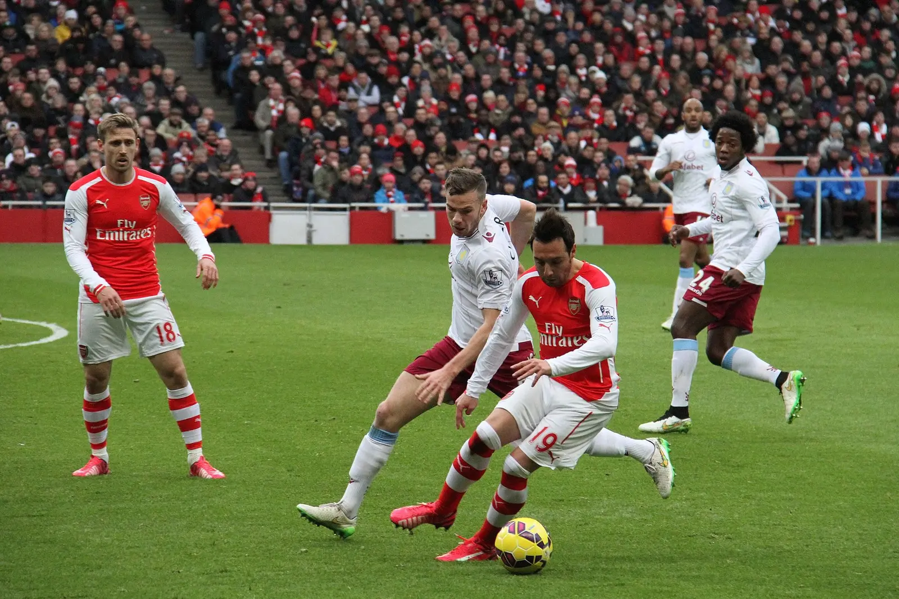
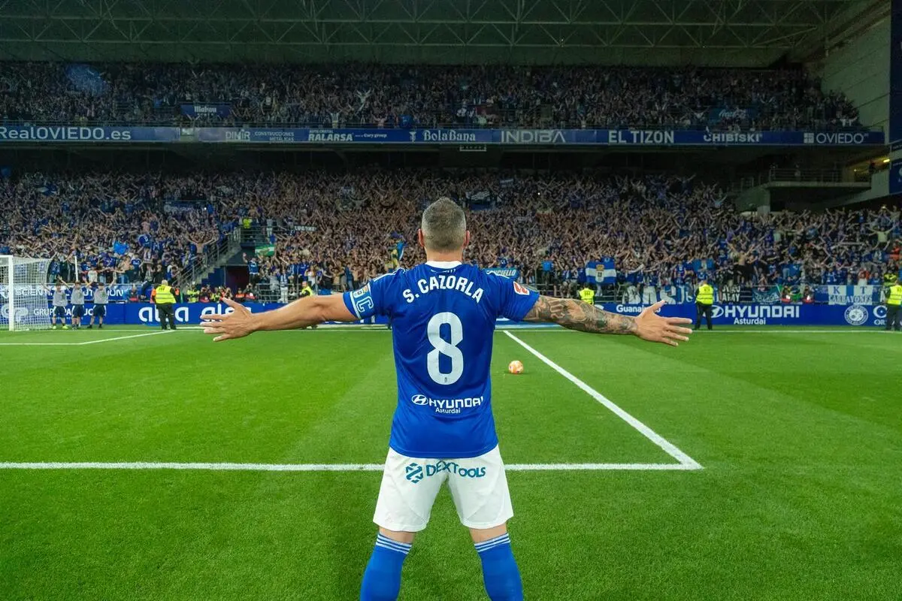
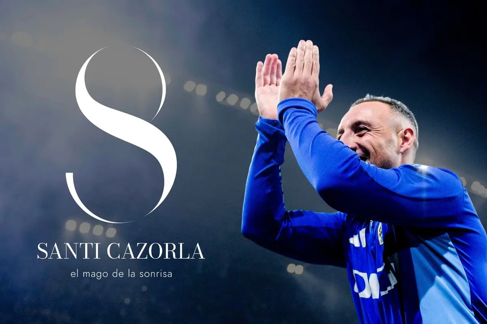

Real Oviedo · Santi Cazorla
The Shape
of an Eight.
Một sự nghiệp rời khỏi điểm bắt đầu, đi qua vinh quang cùng đau đớn, rồi trở về để hoàn thành hình dáng của chính mình.
Có những sự nghiệp khép lại ở một nơi rất xa điểm bắt đầu, dưới ánh đèn của sân khấu lớn nhất, giữa những chiếc cúp, những tràng pháo tay và cảm giác rằng một con người vừa đi hết con đường mà mình đã dành cả đời để theo đuổi.
Nhưng cũng có những sự nghiệp không thật sự kết thúc bằng việc đi xa thêm một đoạn, mà bằng khoảnh khắc con đường sau rất nhiều năm vòng quanh thế giới cuối cùng đưa một người trở lại nơi anh từng bước đi lần đầu tiên, nơi những giấc mơ còn chưa có tên, nơi trái bóng chưa phải nghề nghiệp, danh tiếng hay di sản, mà chỉ là thứ khiến một cậu bé quên mất giờ về nhà.
Với Santi Cazorla, điểm cuối cùng mang cùng một cái tên với điểm bắt đầu.
Oviedo.
Khi Cazorla treo đôi giày lên ở tuổi 41, anh không khép lại sự nghiệp tại một nơi bất kỳ được lựa chọn chỉ vì thuận tiện cho những năm tháng cuối, mà trong màu áo của Real Oviedo, câu lạc bộ từng nuôi lớn anh từ khi còn là một cậu bé, nơi anh đã rời đi trước cả khi kịp bước ra sân cho đội một, rồi phải mất hơn hai thập kỷ, đi qua những thành phố khác nhau, những sân vận động khác nhau, những ngày huy hoàng lẫn những quãng tối tưởng như không còn đường trở lại, mới có thể quay về và hoàn tất điều còn dang dở.
Nhìn lại con đường đó, sự nghiệp của Cazorla chưa bao giờ giống một đường thẳng.
Nó mang hình dáng của con số nằm trên lưng áo anh trong phần lớn những năm tháng đẹp nhất, hai vòng tròn nối vào nhau tại một điểm hẹp, một vòng đưa anh rời khỏi quê nhà để đi tìm thế giới, vòng còn lại đưa anh quay về sau khi thế giới đã trao cho anh đủ vinh quang, đủ tình yêu, đủ đau đớn và đủ những vết sẹo để hiểu rằng có những chuyến đi xa, sau cùng, chỉ là cách một con người học được ý nghĩa thật sự của việc trở về.
Ở vòng đầu tiên, Cazorla bước ra khỏi Asturias bằng một cơ thể nhỏ bé nhưng mang theo đôi chân gần như không chịu tuân theo những quy luật thông thường. Người ta có thể xem anh chơi suốt nhiều năm mà vẫn đôi lúc phải tự hỏi đâu mới là chân thuận, bởi cả chân trái lẫn chân phải đều có thể đón bóng, xoay người, tung ra một đường chuyền hoặc kết thúc pha bóng với cùng một sự tự nhiên, như thể trái bóng không cần biết nó đang nằm bên phía nào của cơ thể, miễn là người đang chạm vào nó vẫn là Santi.
Anh nhỏ bé giữa một giải đấu được xây nên từ tốc độ, sức mạnh và những va chạm có thể làm người ta nghe thấy từ tận khán đài, nhưng rất ít cầu thủ có thể lấy trái bóng khỏi chân anh. Cazorla không đối đầu với sự dữ dội của Premier League bằng cách trở nên dữ dội hơn, anh chỉ làm cho nó trở nên chậm lại trong một khoảnh khắc, xoay người qua một khoảng trống tưởng như không đủ cho một cơ thể đi qua, rồi mang trái bóng ra khỏi vòng vây bằng sự mềm mại khiến người ta quên mất điều vừa xảy ra khó tới mức nào.
Có những cầu thủ khiến bóng đá trông giống một cuộc chiến, nơi từng mét cỏ phải được giành lại bằng sức mạnh, bằng tiếng hét và bằng ý chí không chịu nhường bước.
Cazorla khiến bóng đá trông giống một trò chơi mà anh chưa bao giờ muốn lớn lên đủ để thôi yêu nó.
Một cú xoay người của Santi không giống hành động chạy thoát khỏi đối thủ, mà giống một cánh cửa vừa được mở ra ở nơi người ta vẫn tưởng chỉ có bức tường. Một đường chuyền của anh không mang vẻ lạnh lùng của một phép tính được thực hiện hoàn hảo, nó trượt qua hàng phòng ngự rồi nằm xuống trước chân đồng đội bằng sự chính xác dịu dàng của một lá thư cuối cùng cũng tìm được đúng người nhận. Ngay cả trong những trận đấu căng thẳng nhất, nụ cười đó vẫn xuất hiện, không phải nụ cười của một người xem nhẹ cuộc chiến chung quanh, mà là của một người dường như vẫn còn cảm thấy biết ơn vì mình được có mặt trên sân, được nghe tiếng bóng lăn và được tiếp tục làm điều từng khiến mình vui từ những ngày chưa ai biết tới cái tên Santi Cazorla.
Có lẽ vì vậy mà người hâm mộ Arsenal yêu anh theo một cách rất riêng.
Không chỉ vì Cazorla giỏi, mà vì ở gần anh, bóng đá dường như bớt nặng nề hơn một chút.

Và trong tất cả những ký ức anh để lại tại Arsenal, không có khoảnh khắc nào nói rõ điều đó hơn buổi chiều ở Wembley năm 2014, khi một đội bóng đã mang trên lưng chín năm chờ đợi bước vào trận chung kết FA Cup rồi bị Hull City dẫn 2-0 chỉ sau chưa đầy mười phút.
Khi đó, sức nặng không chỉ nằm trên bảng tỷ số.
Nó nằm trong từng đường chuyền bắt đầu vội vàng hơn, trong những tiếng thở dài từ khán đài, trong nỗi sợ rất Arsenal của những năm tháng đó, rằng cứ mỗi lần một điều đẹp đẽ tới gần, đội bóng sẽ lại tìm ra cách để tự làm nó rời khỏi tầm tay. Chín năm không danh hiệu giống một khối đá vô hình đè lên vai từng cầu thủ, và trong khoảnh khắc ấy, Arsenal không chỉ cần một bàn thắng để rút ngắn cách biệt, họ cần một người làm cho cả đội nhớ lại rằng trận đấu vẫn chưa kết thúc.
Cazorla đứng trước quả đá phạt từ khoảng cách hơn hai mươi mét, bước tới rồi đưa trái bóng vòng qua hàng rào, cắm vào góc cao khung thành.
Đó chưa phải bàn thắng đem chiếc cúp về Arsenal, nhưng là bàn thắng kéo đội bóng ra khỏi mép vực, là khe sáng đầu tiên xuất hiện trong một buổi chiều tưởng như đang khép lại quá sớm, là khoảnh khắc cả Wembley chợt nhận ra câu chuyện vẫn còn một đoạn khác để viết. Arsenal sau đó thắng 3-2, chấm dứt chín năm trắng tay, nhưng trước khi Ramsey ghi bàn quyết định, trước khi chiếc cúp được nâng lên và những giọt nước mắt cuối cùng chuyển từ tuyệt vọng sang nhẹ nhõm, chính cú đá phạt của Santi là thứ đầu tiên làm niềm tin quay trở lại.
Trong nhiều năm ở Arsenal, Cazorla cũng thường làm điều tương tự theo những cách nhỏ hơn, âm thầm hơn và ít được giữ lại trong highlight hơn. Anh nhận bóng khi mọi thứ chung quanh đã bị khóa chặt rồi mở ra thêm một lối đi, lùi xuống sâu khi đội bóng cần một người đưa nhịp chơi trở về đúng hướng, dạt ra biên khi khoảng trống nằm ngoài đường trung tâm, rồi lại xuất hiện giữa sân khi Arsenal cần một người đủ bình tĩnh để giữ những mảnh rời rạc của trận đấu không vỡ thêm.
Anh không chỉ chuyền bóng.
Anh giúp trái bóng đi qua đội hình mà không mang theo sự hoảng loạn.
Anh không chỉ thoát pressing.
Anh làm những người chung quanh tin rằng giữa một vòng vây vẫn luôn tồn tại một lối ra, chỉ là chưa ai nhìn thấy nó trước Santi.
Có những ngày Arsenal mất Cazorla, cả đội bóng cũng như mất đi một phần khả năng thở, bởi giữa tất cả những cầu thủ có thể chạy nhanh hơn, tranh chấp mạnh hơn hay tạo ra những khoảnh khắc lớn hơn, anh vẫn là người khiến mọi thứ được nối lại bằng một nhịp điệu nhẹ tới mức người ta thường chỉ nhận ra tầm quan trọng của nó khi nhịp điệu đó biến mất.
Rồi vòng tròn đầu tiên của sự nghiệp bắt đầu thu hẹp.
Giữa hình số 8 luôn tồn tại một điểm thắt lại, nơi tất cả những đường nét rộng mở phải đi qua một khoảng nhỏ tới nghẹt thở trước khi có thể tiếp tục sang phía bên kia. Với Cazorla, điểm hẹp đó nằm trong những năm tháng mà trái bóng bị lấy khỏi chân anh, khi một chấn thương tưởng như chỉ khiến anh nghỉ vài tháng kéo dài thành một quãng đời khác, đầy những ca phẫu thuật, những biến chứng, những lần hy vọng vừa kịp sáng lên đã bị dập tắt, và nỗi sợ rằng cơ thể từng mang bóng đá tới cho anh có thể không còn cho phép anh trở lại với điều mình yêu nhất.
Cơ thể từng là nơi bóng đá trú ngụ bỗng trở thành một ngôi nhà liên tục bị tháo xuống rồi dựng lại.
Mỗi cuộc phẫu thuật khép thêm một cánh cửa.
Mỗi lần hồi phục không diễn ra như mong đợi kéo dài thêm hành lang tối phía trước.
Đôi chân từng có thể thoát khỏi ba cầu thủ trong một khoảng trống nhỏ giờ phải chiến đấu để giành lại những chuyển động cơ bản nhất, còn người đàn ông từng làm những điều phi thường với trái bóng bằng một vẻ nhẹ nhàng gần như không cần dùng sức phải bước vào cuộc chiến lớn nhất đời mình, một cuộc chiến không có khán đài, không có tiếng reo, không có bảng tỷ số và cũng không có ai nói cho anh biết mình còn cách chiến thắng bao xa.
Người ta thường kể hành trình đó bằng hai chữ nghị lực, nhưng có lẽ nghị lực vẫn là một cách gọi quá gọn cho những gì Cazorla đã phải đi qua.
Nghị lực nghe giống một quyết định lớn được đưa ra trong một khoảnh khắc rõ ràng, như thể người ta chỉ cần lựa chọn đứng lên là con đường sẽ tự mở ra phía trước. Còn sự trở lại của Santi được tạo nên từ hàng ngàn quyết định nhỏ hơn, lặng lẽ hơn và đau đớn hơn rất nhiều, thức dậy thêm một buổi sáng, chịu thêm một buổi trị liệu, thử đặt chân xuống đất thêm lần nữa, chấp nhận rằng hôm nay mình vẫn chưa thể làm điều từng là bản năng, rồi sáng hôm sau lại bắt đầu lại từ đầu chỉ vì đâu đó dưới những lớp băng, những vết khâu và những tháng ngày không nhìn thấy điểm cuối, tình yêu dành cho trái bóng vẫn sáng như một căn phòng người ta chưa bao giờ chịu tắt đèn.
Có những người trở lại để chứng minh những người từng nghi ngờ mình đã sai.
Cazorla trở lại có lẽ chỉ vì anh nhớ bóng đá quá nhiều.
Anh trở lại Villarreal năm 2018 sau gần hai năm không thi đấu, rồi chơi đủ hay để được gọi lại đội tuyển Tây Ban Nha, như thể thời gian đã lấy khỏi anh một phần cơ thể nhưng vẫn không thể lấy đi khả năng nhìn thấy khoảng trống, sự mềm mại trong từng cú chạm hay niềm vui gần như trẻ con mỗi khi trái bóng quay lại nằm dưới chân.
Đó là một phép màu, nhưng vẫn chưa phải đoạn kết.
Villarreal là nơi Cazorla tìm lại bóng đá.
Oviedo mới là nơi anh tìm lại chính mình.
Năm 2023, ở tuổi 38, sau khi đã chơi tại những sân vận động lớn, khoác áo đội tuyển trong một thế hệ huy hoàng và được yêu thương ở nhiều vùng đất khác nhau, Cazorla quay về câu lạc bộ nơi mình từng trưởng thành. Anh nhận mức lương thấp nhất theo quy định, trao quyền hình ảnh cho câu lạc bộ và chỉ mong một phần tiền bán áo mang tên mình được đầu tư lại vào học viện trẻ.
Anh từng rời Oviedo như một cậu bé cần bóng đá trao cho mình một tương lai, rồi quay về như một người đàn ông muốn dùng phần tương lai còn sót lại để trao lại điều gì đó cho nơi từng đặt trái bóng đầu tiên vào chân mình. Anh không trở về với lời hứa sẽ cứu lấy câu lạc bộ, không đặt bản thân cao hơn những người đã ở đó trong những năm tháng khó khăn, chỉ khoác lên chiếc áo xanh, nhận lại con số quen thuộc rồi bước ra sân như thể quãng đường hơn hai mươi năm vừa qua chưa bao giờ đưa anh đi xa khỏi Oviedo, mà chỉ chuẩn bị cho ngày anh có thể trở lại bằng một hình hài khác.

Trong những câu chuyện cổ, người ta dùng từ nostos để nói về hành trình trở về nhà sau chiến tranh, biển cả và những năm dài lưu lạc, nhưng sự trở về đó chưa bao giờ chỉ là việc một người đặt chân lại đúng nơi mình từng rời đi. Nhà có thể vẫn nằm ở vị trí cũ, những con đường vẫn dẫn về cùng một quảng trường, những bức tường vẫn mang màu sắc quen thuộc, nhưng người bước qua cánh cửa đã mang theo cả một đời sống khác trong đôi mắt, và nơi từng là điểm bắt đầu giờ phải học cách đón lại một con người đã bị thế giới thay đổi.
Oviedo cũng đón Cazorla trở về theo cách đó.
Cậu bé từng rời đi khi chưa kịp chơi cho đội một đã quay lại như một nhà vô địch châu Âu, một người từng giúp Arsenal chấm dứt chín năm không danh hiệu, một cầu thủ đã đi qua những ngày đẹp nhất và tăm tối nhất bóng đá có thể dành cho một con người, một cơ thể mang đầy dấu vết của những cuộc chiến nhưng vẫn còn đủ dịu dàng để đối xử với trái bóng như ngày đầu tiên.
Anh không trở về để cho Oviedo thấy mình đã đi xa tới đâu.
Anh trở về để điểm bắt đầu được nhìn thấy con người mà nó từng tạo ra.
Rồi giấc mơ mà thành phố đó đã chờ suốt 24 năm cuối cùng cũng thành sự thật.
Real Oviedo trở lại La Liga, còn Cazorla, người đã trở về khi hầu hết những cầu thủ cùng thế hệ đều chuẩn bị sống một cuộc đời bên ngoài sân cỏ, vẫn còn ở đó để cùng quê nhà bước qua cánh cửa họ đã đứng trước quá lâu. Có lẽ định mệnh không nợ Santi một kết thúc đẹp, bởi nó từng lấy khỏi anh quá nhiều để người ta còn có thể tin cuộc đời luôn biết cách bù đắp công bằng, nhưng lần này, sau tất cả những gì đã làm với đôi chân đó, nó để anh ở lại đủ lâu để đứng giữa Carlos Tartiere, nghe cả thành phố gọi tên mình và nhìn câu lạc bộ thuở nhỏ trở lại nơi họ vẫn luôn tin mình thuộc về.
Oviedo không thể ở lại La Liga sau mùa giải cuối cùng của Cazorla, và vì vậy câu chuyện cũng không khép lại bằng một phép màu hoàn hảo, không có chiếc cúp sau cùng, không có chiến thắng cuối cùng đủ đẹp để biến mọi vết thương trước đó thành những bước chuẩn bị cần thiết cho một cái kết cổ tích.
Nhưng có lẽ một sự nghiệp như của Santi chưa bao giờ cần sự hoàn hảo để trở nên trọn vẹn.
Điều quan trọng không phải anh phải chiến thắng trận đấu cuối, mà là sau tất cả những lần cơ thể tưởng như đã tước khỏi anh quyền được lựa chọn, anh vẫn có thể tự quyết định nơi tiếng còi cuối cùng vang lên. Không phải tại sân vận động lớn nhất, không phải trong màu áo đã trao cho anh nhiều danh hiệu nhất, cũng không phải trước hàng triệu người từng biết tên anh, mà tại nơi một cậu bé từng nhìn trái bóng và bắt đầu mơ.
Bây giờ nhìn lại, con số 8 trên lưng Cazorla dường như đã biết trước hình dáng của hành trình đó từ rất lâu.
Một vòng tròn là cậu bé rời Asturias để đi tìm giấc mơ.
Một vòng tròn là người đàn ông mang giấc mơ trở về.
Ở giữa là chấn thương, những cuộc phẫu thuật, những tháng ngày bóng đá tưởng như đã khép cánh cửa, một điểm thắt hẹp tới mức chỉ cần ít đi một chút hy vọng, toàn bộ đường nét có lẽ đã đứt lìa ở đó.
Nhưng nó không đứt.
Nó tiếp tục đi, chậm hơn, đau hơn, mang theo nhiều vết sẹo hơn, rồi cuối cùng gặp lại chính mình ở nơi mọi thứ từng bắt đầu.
Số 8 không có một điểm nào thật sự là điểm cuối. Đường nét cứ rời xa rồi quay lại, mở rộng rồi thu hẹp, đi qua chính mình trước khi tiếp tục, như thể mọi cuộc chia tay chỉ là một cách khác để con đường chuẩn bị cho ngày trở về.
Và khi được đặt nằm ngang, nó trở thành biểu tượng của vô tận.
Không phải vì Santi Cazorla có thể chơi bóng mãi mãi, bởi không đôi chân nào có thể thắng được thời gian, nhất là đôi chân đã phải chịu đựng nhiều như vậy. Nhưng có những câu chuyện sau khi được đưa về đúng nơi khởi đầu sẽ không thật sự biến mất trong ngày nhân vật chính rời khỏi sân, chúng chỉ hoàn thành hình dáng của mình rồi tiếp tục sống trong ký ức của những người đã được chứng kiến.
Nó sống trong cú đá phạt ở Wembley, trong những lần anh xoay khỏi vòng vây bằng cả hai chân, trong nụ cười vẫn còn đó sau tất cả những gì cơ thể từng bắt anh chịu đựng, trong chiếc áo xanh tại Carlos Tartiere, và trong những đứa trẻ của học viện Oviedo đang mặc chiếc áo mang tên một người từng đứng ở đúng vị trí của chúng, từng rời đi với hai bàn tay trống rồi quay về sau cả một cuộc đời chỉ để nói rằng những giấc mơ sinh ra ở nơi này vẫn có thể đi rất xa.
Santi Cazorla rời quê nhà để tìm kiếm một sự nghiệp, đi qua đủ vinh quang để trở thành ngôi sao, đi qua đủ đau đớn để hiểu rằng chỉ cần còn được chạm vào trái bóng cũng đã là một phép màu, rồi cuối cùng trở về nơi tất cả bắt đầu, không còn là cậu bé cần Oviedo trao cho mình một tương lai, mà là người đàn ông đã mang tương lai đó trở lại cho những đứa trẻ đang đứng phía sau.
Đôi giày sau cùng rồi cũng được treo lên, tiếng reo trong sân vận động rồi cũng lùi vào ký ức, và đôi chân từng khiến trái bóng trông nhẹ hơn mọi sức nặng của cuộc đời cuối cùng cũng được phép nghỉ ngơi.
Nhưng đâu đó tại Oviedo, trên một sân tập dành cho những đứa trẻ vẫn còn chưa biết thế giới rộng tới đâu, sẽ có một trái bóng tiếp tục lăn, một chiếc áo số 8 tiếp tục xuất hiện, và một cậu bé khác sẽ ngước nhìn con đường phía trước bằng đôi mắt của người tin rằng mình cũng có thể rời khỏi nơi này, đi thật xa, rồi một ngày mang tất cả những gì đã tìm thấy quay trở về.
